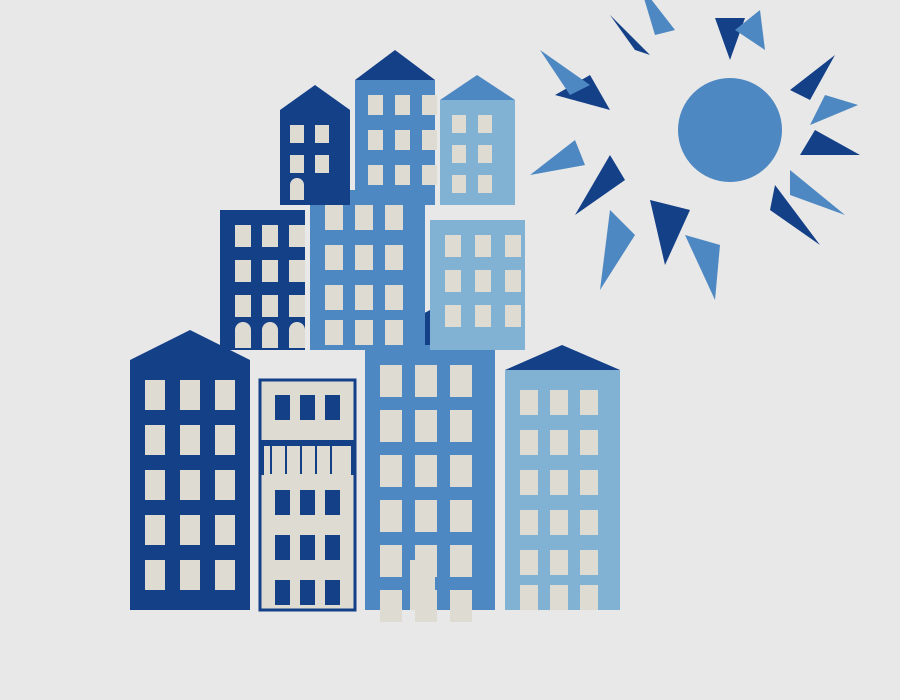
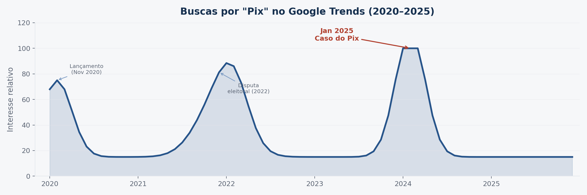

ECOSSISTEMA DE
DESINFORMAÇÃO
E RADICALIZAÇÃO
In: Koga et al. (org.), Políticas Públicas Informadas por Evidências, vol. 1 · Ipea · 2026

O caso do Pix revela uma dinâmica sociotécnica acelerada — que produz efeitos antes da estabilização institucional.
Multiplataforma
Circula entre aplicativos, redes e buscadores.
Afetiva
Mobiliza medo, urgência e desconfiança institucional.
Acelerada
Produz efeitos antes da resposta estatal.
Preemptiva
Interfere em todas as etapas do ciclo decisório.
Uma norma administrativa foi ressignificada como ameaça existencial: taxação, vigilância e controle estatal.


vídeo de Nikolas Ferreira no Instagram
333 chats · 203 grupos + 130 canais
4–10 jan · maior retração dez–jan desde 2022
até 18 jan · recuperação gradual após
Porque ela organiza uma forma coerente de ver, sentir e julgar o mundo — mesmo divergindo do sistema de peritos.
1. Crise permanente
O tempo real vira prova de verdade. Peritos tornam-se ilegítimos — "lentos" e "mediados".
2. Topologia triádica
Seguidores ↔ algoritmos ↔ influenciadores. Novos mediadores legitimam-se na denúncia dos antigos.
3. Senso comum
Circuitos curtos para causalidades longas. "Fazer a própria pesquisa" + "confiar no plano".
4. Preempção
Age-se antes de a ameaça se confirmar. A notícia falsa não contradiz o fato afetivo.
Checagem de fatos é necessária, mas insuficiente. O desafio é reconhecer a desinformação como forma estruturante da experiência política.
👥 Seguidores
- Educação midiática
- Serviços digitais melhores
- Mediadores locais
🤖 Algoritmos
- Regulação de plataformas
- Monitoramento misto
- Tempo quase real
📢 Influenciadores
- Comunicação pública
- Territórios digitais
- Escuta e diálogo